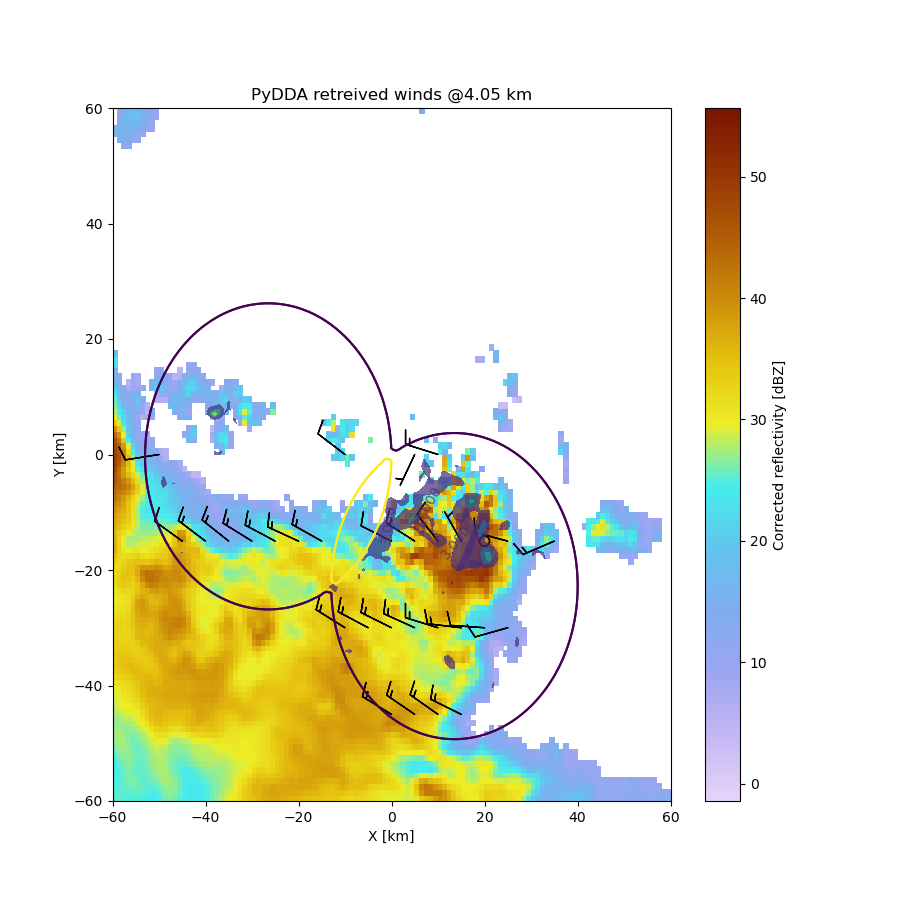
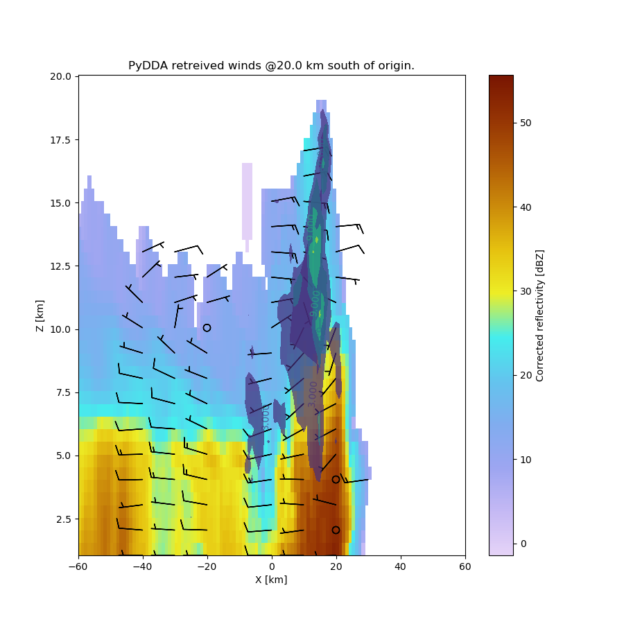
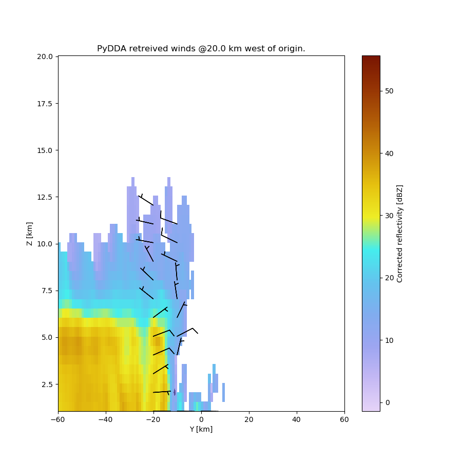

Note
Click here to download the full example code
Example on retrieving and plotting winds¶
This is a simple example for how to retrieve and plot winds from 2 radars using PyDDA.
Author: Robert C. Jackson
- 
- 
- 
Out:
/home/travis/miniconda3/envs/testenv/lib/python3.8/site-packages/pyart/io/cfradial.py:365: UserWarning: WARNING: valid_min not used since it
cannot be safely cast to variable data type
data = self.ncvar[:]
/home/travis/miniconda3/envs/testenv/lib/python3.8/site-packages/pyart/io/cfradial.py:365: UserWarning: WARNING: valid_max not used since it
cannot be safely cast to variable data type
data = self.ncvar[:]
/home/travis/build/openradar/PyDDA/pydda/retrieval/angles.py:24: RuntimeWarning: invalid value encountered in arccos
elev = np.arccos((Re**2 + slantrsq - rh**2)/(2 * Re * slantr))
Calculating weights for radars 0 and 1
/home/travis/build/openradar/PyDDA/pydda/retrieval/wind_retrieve.py:653: RuntimeWarning: invalid value encountered in arccos
theta_2 = np.arccos((x-rad2[1])/b)
Calculating weights for models...
Starting solver
rmsVR = 6.776753068494562
Total points: 92092
| Jvel | Jmass | Jsmooth | Jbg | Jvort | Jmodel | Jpoint | Max w
| 22.8704| 179.9488| 0.0000| 0.0000| 0.0000| 0.0000| 0.0000| 14.2900
Norm of gradient: 0.06044649418953585
Iterations before filter: 10
| Jvel | Jmass | Jsmooth | Jbg | Jvort | Jmodel | Jpoint | Max w
| 3.8770| 66.1782| 0.0000| 0.0000| 0.0000| 0.0000| 0.0000| 23.7764
Norm of gradient: 0.023820509033272628
Iterations before filter: 20
| Jvel | Jmass | Jsmooth | Jbg | Jvort | Jmodel | Jpoint | Max w
| 4.0276| 37.8407| 0.0000| 0.0000| 0.0000| 0.0000| 0.0000| 24.6265
Norm of gradient: 0.027429368747421107
Iterations before filter: 30
| Jvel | Jmass | Jsmooth | Jbg | Jvort | Jmodel | Jpoint | Max w
| 0.8632| 28.6443| 0.0000| 0.0000| 0.0000| 0.0000| 0.0000| 26.5863
Norm of gradient: 0.006865328325901467
Iterations before filter: 40
| Jvel | Jmass | Jsmooth | Jbg | Jvort | Jmodel | Jpoint | Max w
| 1.6287| 20.6755| 0.0000| 0.0000| 0.0000| 0.0000| 0.0000| 28.3852
Norm of gradient: 0.027985401346624836
Iterations before filter: 50
| Jvel | Jmass | Jsmooth | Jbg | Jvort | Jmodel | Jpoint | Max w
| 0.4844| 17.9732| 0.0000| 0.0000| 0.0000| 0.0000| 0.0000| 29.0275
Norm of gradient: 0.008561077885792502
Iterations before filter: 60
| Jvel | Jmass | Jsmooth | Jbg | Jvort | Jmodel | Jpoint | Max w
| 0.9036| 14.7182| 0.0000| 0.0000| 0.0000| 0.0000| 0.0000| 29.7302
Norm of gradient: 0.011555466540298357
Iterations before filter: 70
| Jvel | Jmass | Jsmooth | Jbg | Jvort | Jmodel | Jpoint | Max w
| 0.3991| 13.8528| 0.0000| 0.0000| 0.0000| 0.0000| 0.0000| 30.3445
Norm of gradient: 0.007752253200000249
Iterations before filter: 80
| Jvel | Jmass | Jsmooth | Jbg | Jvort | Jmodel | Jpoint | Max w
| 0.2828| 13.3721| 0.0000| 0.0000| 0.0000| 0.0000| 0.0000| 30.4677
Norm of gradient: 0.006272750311503059
Iterations before filter: 90
| Jvel | Jmass | Jsmooth | Jbg | Jvort | Jmodel | Jpoint | Max w
| 0.3071| 12.9929| 0.0000| 0.0000| 0.0000| 0.0000| 0.0000| 30.6440
Norm of gradient: 0.007580047915590302
Iterations before filter: 100
| Jvel | Jmass | Jsmooth | Jbg | Jvort | Jmodel | Jpoint | Max w
| 0.2213| 12.9835| 0.0000| 0.0000| 0.0000| 0.0000| 0.0000| 30.6650
Norm of gradient: 0.003418463982556818
Iterations before filter: 110
| Jvel | Jmass | Jsmooth | Jbg | Jvort | Jmodel | Jpoint | Max w
| 0.2190| 12.9830| 0.0000| 0.0000| 0.0000| 0.0000| 0.0000| 30.6806
Norm of gradient: 0.003456007238178948
Iterations before filter: 120
Applying low pass filter to wind field...
| Jvel | Jmass | Jsmooth | Jbg | Jvort | Jmodel | Jpoint | Max w
|8422.4335| 12.0983| 0.0000| 0.0000| 0.0000| 0.0000| 0.0000| 13.6063
Norm of gradient: 0.9741646711484581
| Jvel | Jmass | Jsmooth | Jbg | Jvort | Jmodel | Jpoint | Max w
|7628.5526| 12.4358| 0.0000| 0.0000| 0.0000| 0.0000| 0.0000| 13.6030
Norm of gradient: 0.9310921736846711
| Jvel | Jmass | Jsmooth | Jbg | Jvort | Jmodel | Jpoint | Max w
| 490.5090| 108.3447| 0.0000| 0.0000| 0.0000| 0.0000| 0.0000| 17.6784
Norm of gradient: 0.23690207200093283
| Jvel | Jmass | Jsmooth | Jbg | Jvort | Jmodel | Jpoint | Max w
| 259.5934| 112.2486| 0.0000| 0.0000| 0.0000| 0.0000| 0.0000| 18.0080
Norm of gradient: 0.14310943926380804
| Jvel | Jmass | Jsmooth | Jbg | Jvort | Jmodel | Jpoint | Max w
| 54.4155| 108.6827| 0.0000| 0.0000| 0.0000| 0.0000| 0.0000| 16.8995
Norm of gradient: 0.07850369417513638
| Jvel | Jmass | Jsmooth | Jbg | Jvort | Jmodel | Jpoint | Max w
| 61.2455| 91.8403| 0.0000| 0.0000| 0.0000| 0.0000| 0.0000| 16.6986
Norm of gradient: 0.15163149513705068
| Jvel | Jmass | Jsmooth | Jbg | Jvort | Jmodel | Jpoint | Max w
| 15.9171| 90.1737| 0.0000| 0.0000| 0.0000| 0.0000| 0.0000| 16.7273
Norm of gradient: 0.03769162288445527
| Jvel | Jmass | Jsmooth | Jbg | Jvort | Jmodel | Jpoint | Max w
| 10.2210| 83.9800| 0.0000| 0.0000| 0.0000| 0.0000| 0.0000| 16.6419
Norm of gradient: 0.022538507392030963
| Jvel | Jmass | Jsmooth | Jbg | Jvort | Jmodel | Jpoint | Max w
| 7.0490| 67.8050| 0.0000| 0.0000| 0.0000| 0.0000| 0.0000| 16.3215
Norm of gradient: 0.02463963063424351
| Jvel | Jmass | Jsmooth | Jbg | Jvort | Jmodel | Jpoint | Max w
| 6.1411| 55.8056| 0.0000| 0.0000| 0.0000| 0.0000| 0.0000| 15.9899
Norm of gradient: 0.01991033928197688
| Jvel | Jmass | Jsmooth | Jbg | Jvort | Jmodel | Jpoint | Max w
| 17.3015| 42.6305| 0.0000| 0.0000| 0.0000| 0.0000| 0.0000| 16.8585
Norm of gradient: 0.06736427648606146
Iterations after filter: 1
Iterations after filter: 2
Done! Time = 468.1
/home/travis/build/openradar/PyDDA/pydda/vis/barb_plot.py:173: UserWarning: linewidths is ignored by contourf
cs = ax.contourf(grid_x[level, :, :], grid_y[level, :, :],
/home/travis/build/openradar/PyDDA/pydda/retrieval/wind_retrieve.py:653: RuntimeWarning: invalid value encountered in arccos
theta_2 = np.arccos((x-rad2[1])/b)
/home/travis/build/openradar/PyDDA/pydda/vis/barb_plot.py:212: UserWarning: The following kwargs were not used by contour: 'color'
ax.contour(
/home/travis/build/openradar/PyDDA/pydda/retrieval/wind_retrieve.py:653: RuntimeWarning: invalid value encountered in arccos
theta_2 = np.arccos((x-rad2[1])/b)
/home/travis/build/openradar/PyDDA/pydda/vis/barb_plot.py:212: UserWarning: The following kwargs were not used by contour: 'color'
ax.contour(
/home/travis/build/openradar/PyDDA/pydda/vis/barb_plot.py:635: UserWarning: linewidths is ignored by contourf
cs = ax.contourf(grid_x[::, level, ::], grid_h[::, level, ::],
/home/travis/build/openradar/PyDDA/pydda/vis/barb_plot.py:823: UserWarning: linewidths is ignored by contourf
cs = plt.contourf(grid_y[::, ::, level], grid_h[::, ::, level],
import pyart
import pydda
from matplotlib import pyplot as plt
berr_grid = pyart.io.read_grid(pydda.tests.EXAMPLE_RADAR0)
cpol_grid = pyart.io.read_grid(pydda.tests.EXAMPLE_RADAR1)
sounding = pyart.io.read_arm_sonde(
pydda.tests.SOUNDING_PATH)
# Load sounding data and insert as an intialization
u_init, v_init, w_init = pydda.initialization.make_wind_field_from_profile(
cpol_grid, sounding[1], vel_field='corrected_velocity')
# Start the wind retrieval. This example only uses the mass continuity
# and data weighting constraints.
Grids = pydda.retrieval.get_dd_wind_field([berr_grid, cpol_grid], u_init,
v_init, w_init, Co=1.0, Cm=1500.0,
Cz=0,
frz=5000.0, filt_iterations=2,
mask_outside_opt=True, upper_bc=1)
# Plot a horizontal cross section
plt.figure(figsize=(9, 9))
pydda.vis.plot_horiz_xsection_barbs(Grids, background_field='reflectivity',
level=6,
w_vel_contours=[3, 6, 9, 12, 15],
barb_spacing_x_km=5.0,
barb_spacing_y_km=15.0)
plt.show()
# Plot a vertical X-Z cross section
plt.figure(figsize=(9, 9))
pydda.vis.plot_xz_xsection_barbs(Grids, background_field='reflectivity',
level=40,
w_vel_contours=[3, 6, 9, 12, 15],
barb_spacing_x_km=10.0,
barb_spacing_z_km=2.0)
plt.show()
# Plot a vertical Y-Z cross section
plt.figure(figsize=(9, 9))
pydda.vis.plot_yz_xsection_barbs(Grids, background_field='reflectivity',
level=40,
w_vel_contours=[3, 6, 9, 12, 15],
barb_spacing_y_km=10.0,
barb_spacing_z_km=2.0)
plt.show()
Total running time of the script: ( 7 minutes 50.026 seconds)